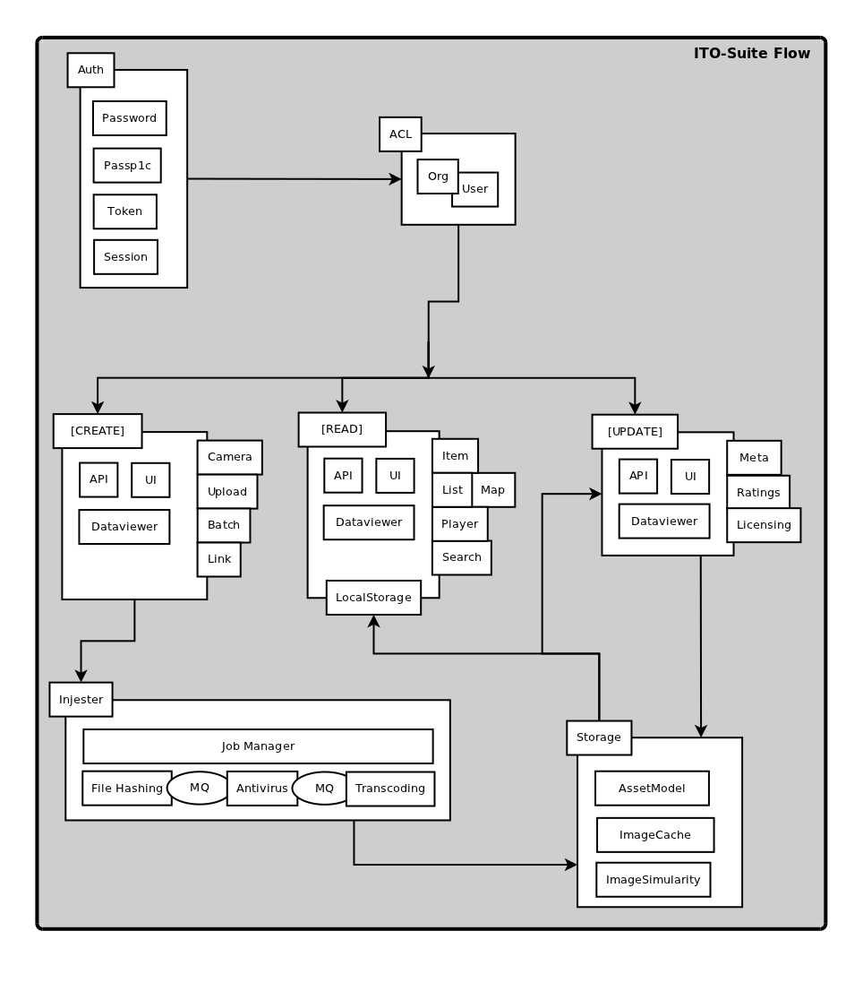

ITO Suite
The ITO Suite is a Media Management Framework in development since 2013. It has been used simply as an archive, as a backend for Internet based art projects and is now being modularized for several AI enhanced photo mapping applications with archive backends:
Stack
- Linux (modern kernel)
- git, npm, bower, gulp
- node.js
- MongoDB
- RabbitMQ, socket.io
- Apache Solr Search
- CLI to: graphicsmagick, ffmpeg, ps, clamav, etc.
- Angular
Module List
Flow
